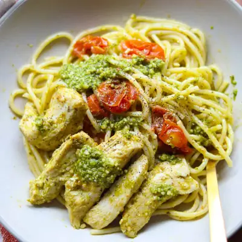

Chicken Pesto Spaghetti

Ingredients
- 1 pound chicken breast, sliced into strips
- 2 cups cherry tomatoes, sliced in half
- 1 cup pesto, homemade or store-bought
- 12 ounces spaghetti
- Parmesan or mozzarella cheese
Steps
- Preheat the oven to 375°F. Lightly grease a baking dish with olive oil.
- Arrange the sliced chicken breast and cherry tomatoes in the baking dish. Toss with ½ cup pesto until evenly coated. Spread everything out in an even layer. Bake for 20-25 minutes, or until the chicken is fully cooked (internal temperature of 165°F/74°C).
- While the chicken is baking, cook the spaghetti according to the package instructions. Before draining, reserve ½ cup of the pasta cooking water.
- Once the chicken and tomatoes are done, add the cooked spaghetti to the baking dish. Stir in the remaining ½ cup pesto, mixing until the spaghetti is well coated. If the sauce is too thick, gradually add the reserved pasta water until it reaches your desired consistency.
- Sprinkle grated Parmesan cheese over the top, along with freshly cracked black pepper and red chili flakes if desired.
Recipe by Min Kwon · Kidfriendly Meals, from MJ and Hungryman. Saved here for personal use; the original has the full notes, tips and photos. Open original